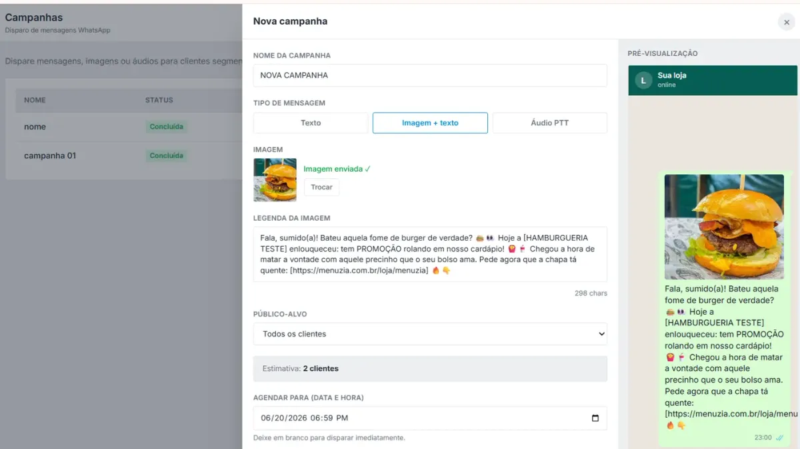

Como aumentar as vendas do delivery: 10 ações que dá para fazer este mês

Venda de delivery cresce por três caminhos: mais clientes, mais pedidos por cliente e mais valor por pedido. O erro comum é gastar tudo no primeiro (anúncio) e esquecer os outros dois, que são mais baratos. Estas são 10 ações, da mais barata para a mais cara.
Mais valor por pedido
1. "Peça também" na finalização
Batata, refri ou sobremesa oferecidos antes de fechar. Um acerto a cada cinco pedidos já mexe no faturamento do mês.
2. Combos com preço melhor
Combo bem montado sobe o ticket e simplifica a escolha.
3. Frete grátis acima de um valor
O cliente completa o pedido para não pagar a entrega.
Mais pedidos por cliente
4. Cashback para o próximo pedido
Dinheiro de volta só vale na próxima compra — motivo concreto para voltar. Veja cashback para delivery.
5. Recuperação de clientes sumidos
Quem não pede há 30 dias recebe uma mensagem com um motivo para voltar. No Menuzia é a campanha recorrente Recuperação de clientes. Modelos em mensagem automática para delivery.
6. Promoção no dia fraco
Terça e quarta vazias? Disparo para a base com uma oferta só daquele dia. Veja disparo no WhatsApp.
Menos pedido perdido
7. Responder em segundos
Cliente sem resposta pede em outro lugar. Veja WhatsApp do delivery lotado.
8. Cardápio que fecha o pedido
Foto, taxa clara, Pix e horário visível. Veja por que o cliente não finaliza o pedido.
Mais clientes
9. QR Code na embalagem e cupom de recompra
Quem veio pelo iFood recebe o convite para pedir direto da próxima vez. Veja alternativa ao iFood.
10. Anúncio local com Pixel
Raio de entrega, foto do carro-chefe e medição de pedido com Pixel da Meta. Veja como fazer anúncios para delivery e o guia de marketing para delivery.
Por onde começar
Se a base de clientes já existe, comece pelas ações 4, 5 e 6: custam quase nada e falam com quem já comprou. Se o ticket está baixo, 1, 2 e 3. Anúncio fica para quando o cardápio já converte bem.
Quanto custa
Peça também, combos, cupons e cashback estão no plano Básico, R$97/mês. Campanhas no WhatsApp, robô e financeiro no Completo, R$149/mês. Sem comissão por pedido.
Buscas relacionadas
O que donos de restaurante e delivery pesquisam antes de contratar — cada busca leva para a página que responde a ela:
Perguntas frequentes
O que fazer quando as vendas do delivery caem?
Comece pela base: reative quem sumiu com campanha no WhatsApp, crie motivo de recompra com cashback e confira se o cardápio não está perdendo pedido por falta de foto, taxa ou Pix.
Qual a forma mais barata de vender mais no delivery?
Vender de novo para quem já comprou. Campanha para a própria base custa muito menos que anúncio para cliente novo.
Como aumentar o ticket médio do delivery?
Com "peça também", combos, adicionais pagos bem apresentados e frete grátis acima de um valor mínimo.
Promoção no iFood ou no canal próprio?
O app serve para ser encontrado; a promoção de recompra rende mais no canal próprio, onde não há comissão.
Em quanto tempo dá para ver resultado?
Campanha para a base costuma gerar pedido no mesmo dia. Mudanças de cardápio e cashback aparecem ao longo de algumas semanas.
Fale com um especialista do Menuzia
Sem comissão por pedido e sem fidelidade. Planos a partir de R$97/mês, com configuração feita pela nossa equipe.
Quero conhecer o Menuzia →